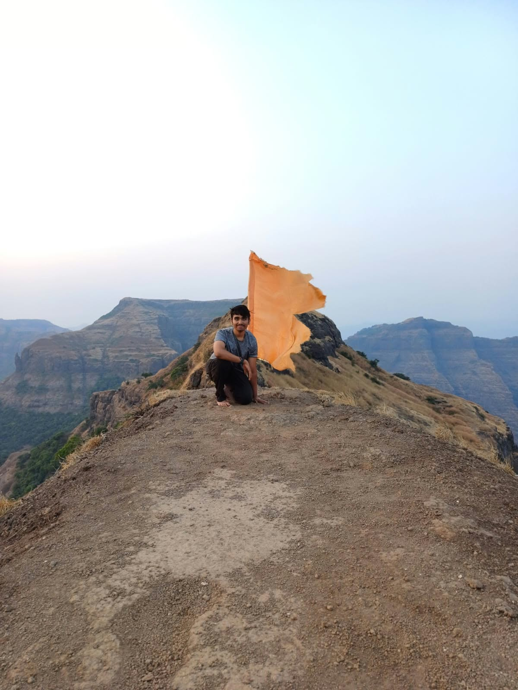
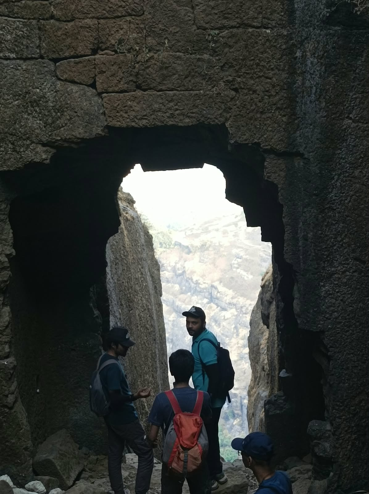
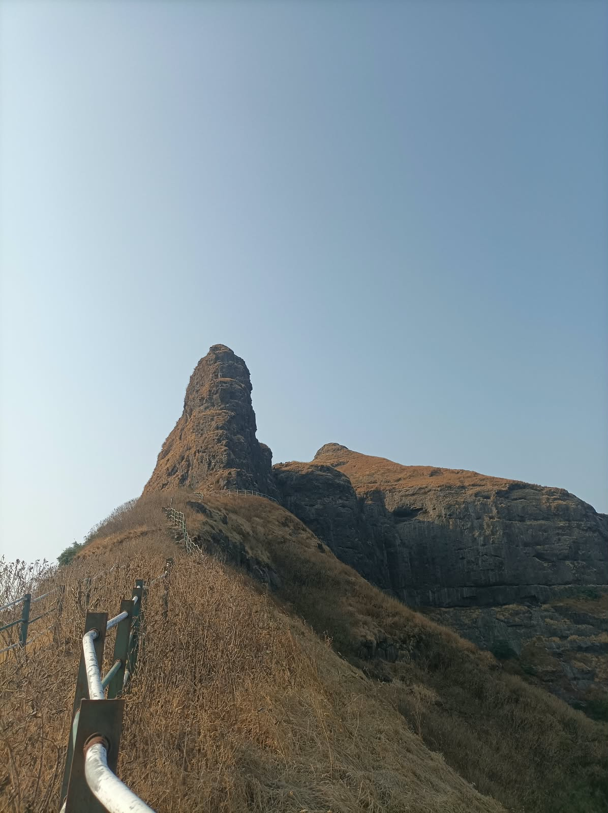
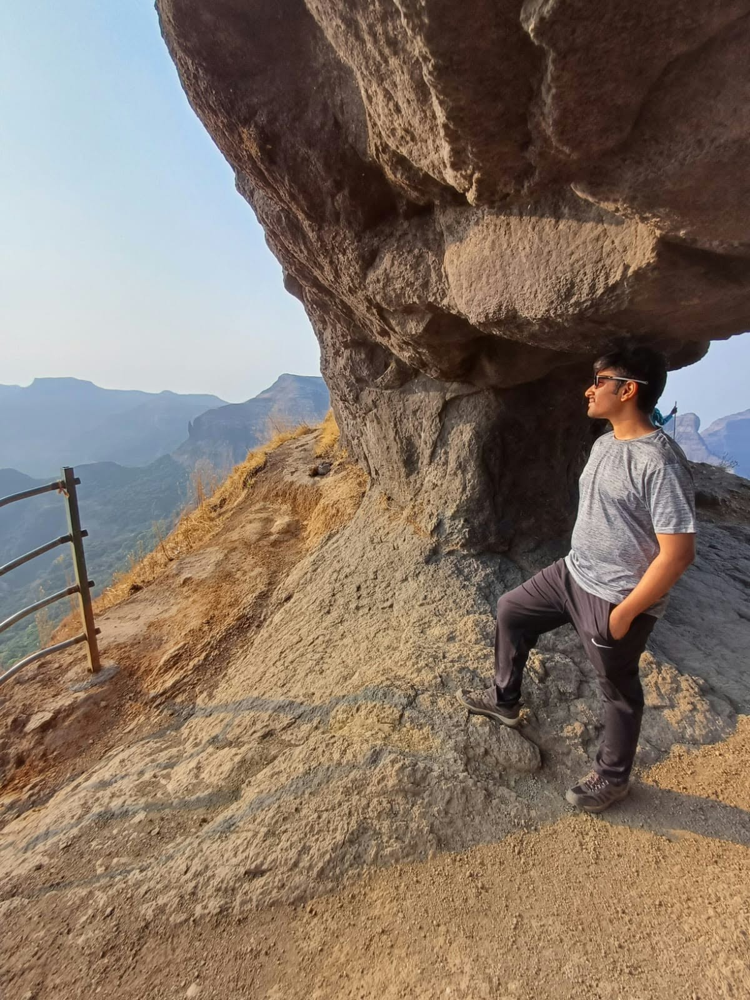
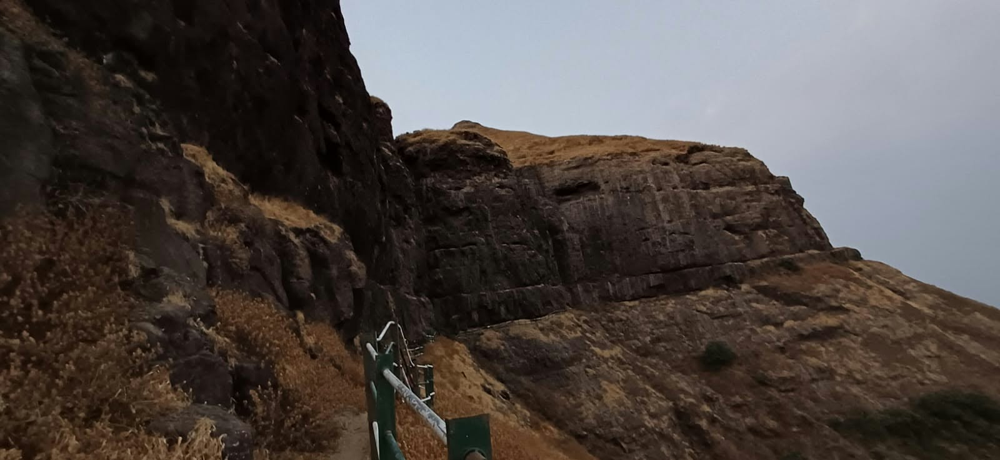
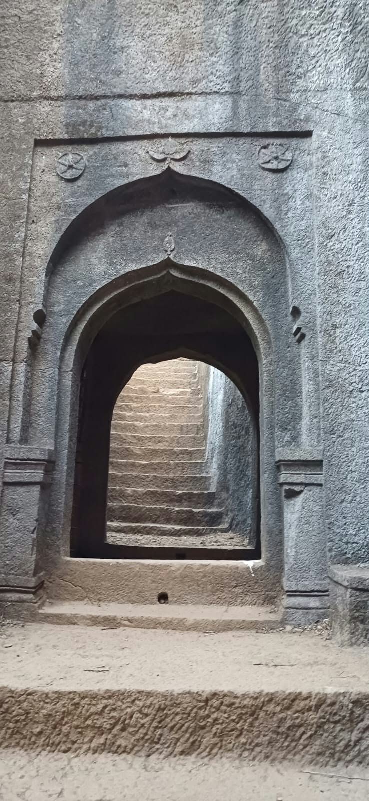
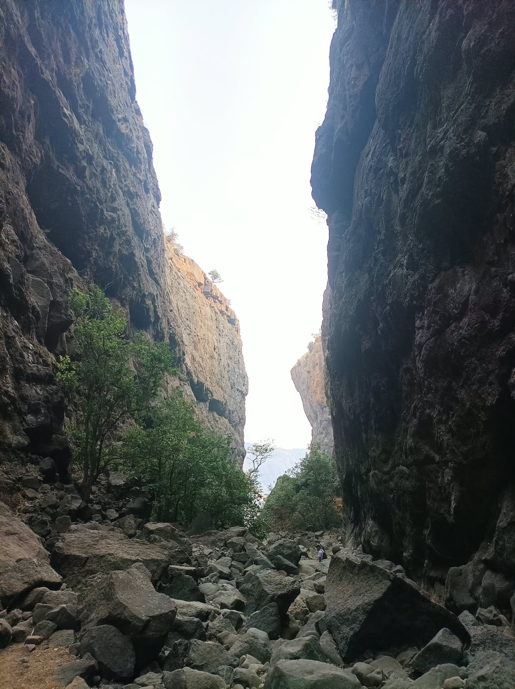

Trek 01
In April 2024 I trekked Ratangarh and Sandhan Valley with a friend and a trekking company. Ratangarh was a beginner-to-moderate climb. Sandhan Valley was the tougher half, with water crossings and bouldering over huge rocks.
A running log of the trails I've walked. The first entry: a fort climb and a valley trek in April 2024, Ratangarh and Sandhan Valley.

In April 2024 I trekked Ratangarh and Sandhan Valley with a friend and a trekking company. Ratangarh was a beginner-to-moderate climb. Sandhan Valley was the tougher half, with water crossings and bouldering over huge rocks.






Sandhan Valley is a long, deep gorge of about 4 km, with walls 300 to 400 feet high. It was the harder half of the trip: moderate to difficult, with water crossings and bouldering over huge rocks. We also saw some snakes on the way.